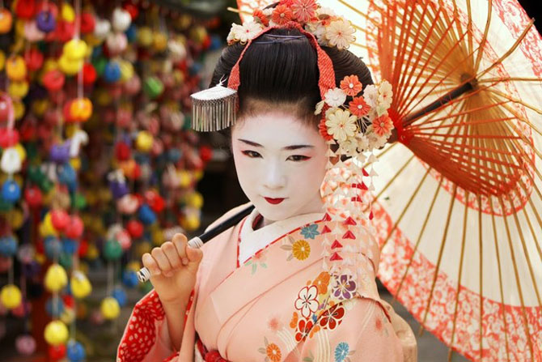
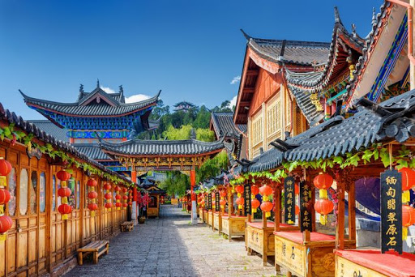
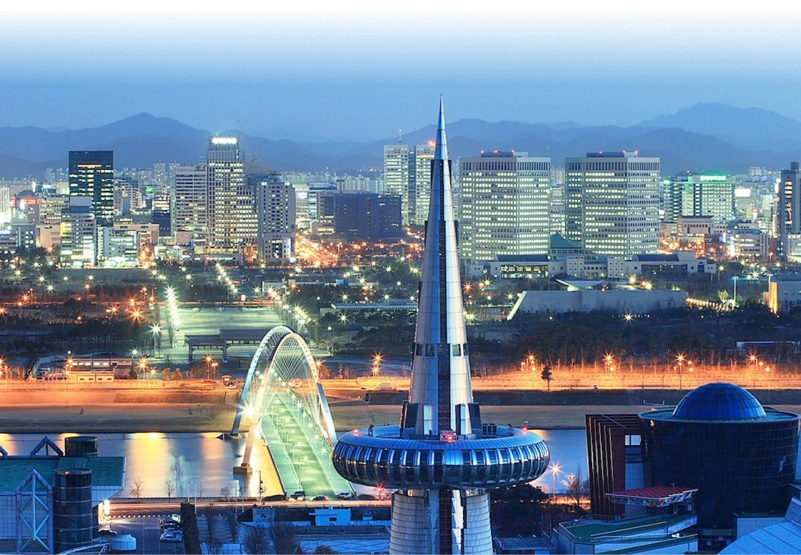
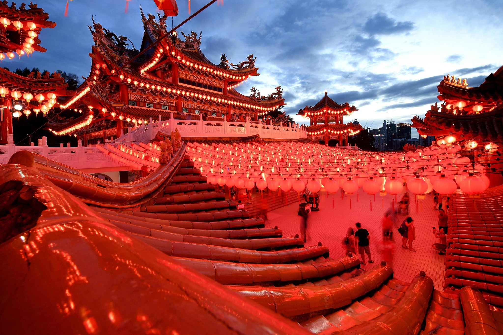

Japón
Gastronomía
Es habitual incluir pequeñas porciones de diferentes tipos de comida separadas en distintos compartimentos. La estética siempre juega un papel importante ya que forma parte de esta armonía. Como principales platos tenemos el sushi, onigiri, tempura, tonkatsu, okonomiyaki, yakisoba, takoyakisopa de miso, arroz, sake y te verde o matcha
Sitios de interés
- Fushimi Inari-taisha
- Principal santuario sintoísta dedicado al espíritu de Inari, y situado en Fushimi-ku, uno de los distritos de Kioto. Es especialmente conocido por los miles de toriis rojos que delimitan el camino por la colina en la cual se encuentra situada el santuario. Los torii son donaciones de particulares, familias o compañías. Al espíritu de Inari se le considera como protector de las cosechas, especialmente de arroz, y en consecuencia históricamente ha sido asociado con la riqueza.
- Santuario itsukushima
- Uno de los más grandes santuarios sintoístas, situado en la isla de Itsukushima, cerca de la ciudad de Hatsukaichi en la prefectura de Hiroshima. Está construido sobre el agua. Fue inscrito en la lista del Patrimonio de la Humanidad de la Unesco en el año 1996.
- Tumba de los 47 ronin
-
Este hecho se desarrolló aproximadamente entre 1701 y 1703 y es la historia más famosa que ejemplifica el código de honor samurái, el bushidō.
La historia es de un grupo de samurái que se vieron obligados a convertirse en rōnin(samurais sin señor), después de que su daimyō se viera obligado a cometer el seppuku por haber agredido a un alto funcionario. Esperaron año y medio para cometer la venganza a su señor, esperando que el enemigo bajara la guardia y los idera por inservibles. Tras ese tiempo, asaltaron la casa de Kira y lo mataron. Llevaron su cabeza al templo Sengaku, donde estaba enterrado su señor. Y después de presentarla delante de su tumba y rezar, se entregaron a las autoridades, que los sentenciaron a cometer seppuku. Dieron su vida por limpiar el honor de su señor y cumplir con su deber como smaurias. Esta historia se extendió como la pólvora y en todas partes se admiraron la lealtad, el sacrificio y perseverancia de los valores como el honor.
Cultura
Dentro del contexto que originó la cultura nipona, resultaron una variedad de tradiciones y una filosofía basada en el honor. Así, en la sociedad nipona, las relaciones interpersonales están enmarcadas por los ideales de honor, obligación y deber, soportados por cuatro principios:
- Verticalidad en las relaciones o tate shakai.
- Culto a la forma o rei, que incluye espiritualidad, respeto, consideración, decoro y reverencia.
- Armonía social o wa.
- Dualidad, en cuanto los verdaderos pensamientos personales o honne, y las opiniones mostradas en público o tatemae.
China
Gastronomía
El arroz es un alimento básico, así como lo son el trigo, el maíz o la famosa soja, tan presente en mucho de sus platos. Además, China abastece
a gran parte del mundo con cereales, carne y frutas, entre otros ingredientes no culinarios.
El buen uso de los condimentos es pilar fundamental de la gastronomía china. En muchos de sus platos no falta el curry, entendido el concepto
como mezcla de especias. Entre otras variedades, es famoso el Polvo Cinco Especias. Los brotes de soja, las algas, el jengibre, el aceite de
sésamo o el vino de arroz son también ingredientes muy utilizados en la gastronomía china, sin olvidar los fideos de arroz.
Sitios de interés
- Muralla China
- La Gran muralla China es una antigua fortificación china construida y reconstruida entre el siglo V a. C. y el siglo XVI para proteger la frontera norte del Imperio chino durante las sucesivas dinastías imperiales de los ataques de los nómadas xiongnu de Mongolia y Manchuria. Contando sus ramificaciones y construcciones secundarias, se calcula que tiene sobre unos 21 200 kilómetros de largo, desde la frontera con Corea, al borde del río Yalu, hasta el desierto de Gobi, a lo largo de un arco que delinea aproximadamente el borde sur de Mongolia Interior, aunque hoy solo se conserva un 30 % de ella.
- Ciudad Prohibida
- La Ciudad Prohibida es un complejo palaciego situado en Pekín, capital de China. Durante casi quinientos años, desde la dinastía Ming hasta el final de la dinastía Qing, fue la residencia oficial de los emperadores de China y su corte, así como centro ceremonial y político del Gobierno chino. En la actualidad es una atracción turística que alberga el Museo del Palacio. Construido entre 1406 y 1420 por orden del emperador Yongle, el complejo actual consta de 980 edificios y ocupa una superficie de 72 hectáreas.
- Guerreros de Terracota
- Los Guerreros de terracota son un conjunto de más de 8000 figuras de guerreros y caballos de terracota a tamaño real, que fueron enterradas cerca del autoproclamado primer emperador de China de la Dinastía Qin, Qin Shi Huang, en 210-209 a. C. Se encuentran dentro del Mausoleo de Qin Shi Huang. Fueron descubiertos durante unas obras para un abastecimiento de agua, el 2 de febrero de 1974 cerca de Xi'an. Desde el año 1987 están considerados como Patrimonio de la Humanidad por la Unesco. Enterrando estas estatuas se creía que el emperador seguiría teniendo tropas bajo su mando. El ejército de terracota fue enterrado en formación de batalla en tres fosos, un kilómetro y medio al este de la tumba del emperador, que a su vez dista 33 km al este de Xi'an.
Cultura
La cultura china es una de las más complejas y antiguas del mundo (remontándose más de 5.000 años) ya que posee una gran cantidad de costumbres y tradiciones en una gran area geográfica. Actualmente la población china es de 1.500 millones de habitantes, siendo el país más poblado del mundo. El origen de la cultura china empezó en 2100 a.C. en la actual provincia de Henan, en el centro del país. Aquí surgieron las culturas de Anyang y Erlitou, dos de las primeras culturas de China. Más tarde también surgiría aquí la primera dinastía china, la dinastía Xia. A pesar de englobar a 58 grupos étnicos reconocidos en una única identidad china, pueden encontrarse características en común que apuntan a una misma identidad.
Corea del Sur
Gastronomía
Se puede encontrar una amplia variedad de alimentos y platos de comida en todo el país. Corea fue un país agrícola con la producción del arroz como producto básico desde tiempos antiguos. Hoy en día, la cocina coreana se caracteriza por la diversidad y amplia variedad de carnes y pescados, así como de vegetales. Las diferentes comidas fermentadas y preservadas, como el kimchi (col china picante fermentada), el jeotgal (mariscos fermentados salados) y el doenjang (pasta de soja fermentada) son los principales, haciéndose notar por su peculiar sabor y alto valor nutritivo
Sitios de interés
- Complejo del Palacio de Ch'angdokkung
- Changdeokgung es un conjunto de palacios dentro de un gran parque en Seúl, Corea del Sur. Es uno de los grandes palacios construidos por la Dinastía Chosŏn y, por causa de su localización al este del Palacio de Gyeongbok es muchas veces llamado Palacio del Este. Ch'angdokkgung era el palacio preferido de muchos reyes de la dinastía de Chosŏn y tiene muchos elementos coreanos datados del período de los Tres Reinos de Corea que no fueron incorparados en el más formal Gyeongbokgung.
- Gyeongbokgung
- Gyeongbokgung fue el palacio principal durante la dinastía Joseon. Es uno de los «cinco palacios de Seúl» y cuenta con 600 años de historia. Fue edificado por el monarca que fundó la dinastía Joseon, Lee Seong-Gye, en 1395, cuando trasladó la capital de la era Goryeo a Seúl. Por estar situado en la parte norte de Seúl, solía ser llamado también Bukgwol.
- Myeong-dong
- Myeong-dong se encuentra en Jung-gu, uno de los 25 gu de la ciudad de Seúl. Es la mayor área comercial y uno de los principales atractivos turísticos de compras de la capital. Tiene una superficie de 0,99 km² y una población de unos 3.409 habitantes. En 2011, 2012 y 2013, Myeong-dong estuvo clasificada como la novena calle de compras más cara del mundo.
Cultura
La cultura coreana es resultado de más de 3000 años de historia, y si bien ha recibido influencias de toda la región asiática, especialmente de China, ha logrado desarrollar un carácter propio. El taoísmo, confucianismo y el budismo han tenido gran influencia sobre su cultura. Así mismo, la cultura coreana se ha visto influenciada por su ubicación geográfica como puente entre sus grandes vecinos, China y Japón.
Malasia
Gastronomía
Satay carne a la parrilla en pinchos. Nasi lemak (literalmente arroz en crema) es quizás el plato nacional de Malasia. Pescado asam es pescado cocinado en salsa de asam (tamarindo). Kangkung belacan es kangkung frita en wok con una salsa picante de pasta de gambas (belacan) y guindillas.
Sitios de interés
- Templo Thean Hou
- El Templo Thean Hou es un templo de seis niveles de la diosa del mar chino Mazu ubicado en Kuala Lumpur, Malasia. Se encuentra en 1.67 acres de tierra sobre Robson Heights en Lorong Bellamy, con vistas a Jalan Syed Putra. Se completó en 1987 y se inauguró oficialmente en 1989.
- Cuevas de Batu
- Cuevas de Batu es una colina de piedra caliza, que tiene una serie de cuevas y templos cuevas, situadas en el distrito de Gombak, a 13 kilómetros al norte de la ciudad de Kuala Lumpur, Malasia. Toma su nombre del río Batu o Sungai Batu, que fluye más allá de la colina La cueva es uno de los santuarios hindúes más populares fuera de la India, y está dedicado a Murugan. Es el punto focal de un festival hindú de Thaipusam en Malasia.
- Langkawi
- Langkawi Sky Bridge es un puente atirantado peatonal curvo de 125 metros (410 pies) en Malasia , terminado en 2005. La cubierta del puente se encuentra a 660 metros (2,170 pies) sobre el nivel del mar en la cima de Gunung Mat Cincang en Pulau Langkawi , la isla principal del archipiélago de Langkawi en Kedah
Cultura
La cultura malaya de por si es muy abierta y alegre. Las fiestas del país son muy autóctonas y se encuentran distribuidas por todo el año. Aparte de los festivos religiosos como Ramadán, el Nuevo Año Chino, Deepavali o también Navidad, existen igualmente otras fechas de gran importancia como los festivos regionales, y especialmente el día de Malasia. Los Malayos, siempre encuentran ocasiones para celebrar fiestas públicas y desfiles. Sean las celebraciones de banderas “Chingay” en Penang, los dragones coloridos de Kelantan, la fiesta de cosecha de las tribus indígenas de Borneo “Gawai Dayak” o “Colours of Malaysia”, en la que cada territorio del estado representa su patrimonio cultural. Siempre hay algo que experimentar.